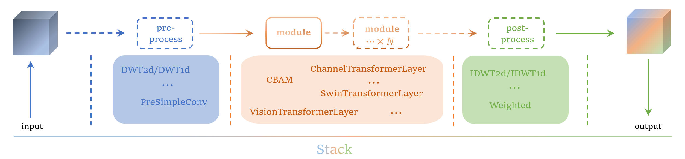
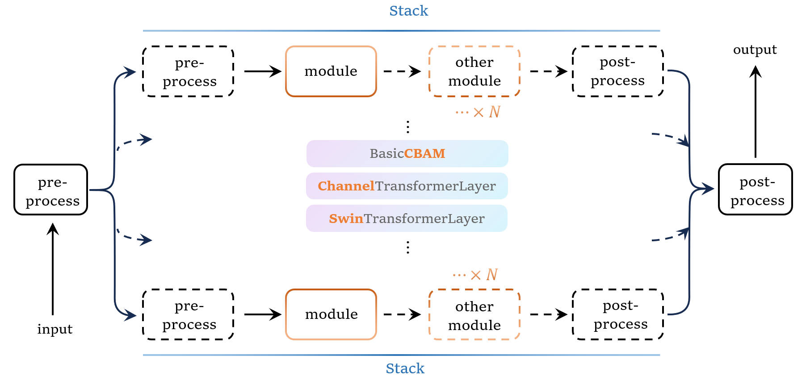

🌟 深度学习简易工具箱 | Uchiha
DIY your model!
快速搭建、自由配置多种经典与创新的深度学习模型结构。

📚 目录
📖 简介
通过配置文件，来自定义你的模型！
支持多种基础模型结构：
- 串行结构（如经典的深度 CNN）
- 并行结构
- 知名的 U-Net 结构 等等


🚀 Demo
👉 配置文件详细用法：配置讲解
⚙️ 安装
1️⃣ 克隆仓库
2️⃣ 创建虚拟环境
3️⃣ 安装 PyTorch
⚠️ 请根据你的 CUDA 版本选择合适的 PyTorch，参考 PyTorch 官网
pip install torch==1.8.2 torchvision==0.9.2 torchaudio==0.8.2 --extra-index-url https://download.pytorch.org/whl/lts/1.8/cu111
4️⃣ 安装依赖
🏃♂️ 使用
常用参数
| 参数 | 描述 |
|---|---|
--seed |
随机数种子 |
--config |
训练程序的配置文件（核心） |
--gpu_ids |
显卡 ID，支持多卡 |
--analyze_params |
参数分析深度（0=总参数量） |
📄 更多详情：配置说明
🚦 训练示例
多卡训练 + 参数递归分析：
🔍 测试示例
示例：
📂 数据集
数据集准备与组织请参考 数据准备
🔗 更多文档
Have fun & happy training! 🚀